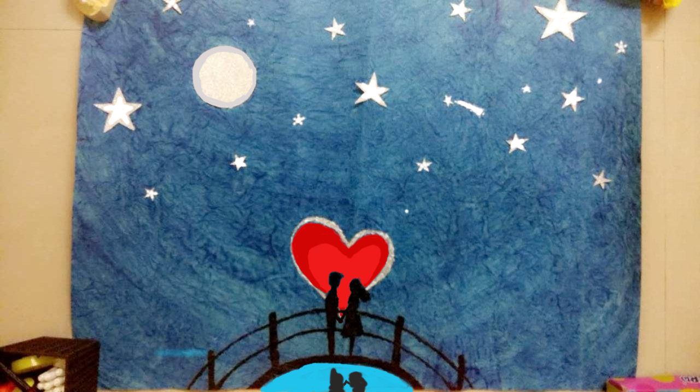

Histogram of Oriented Gradients
The Histogram of Oriented Gradient (HOG) feature descriptor is popular for object detection.
In the following example, we compute the HOG descriptor and display a visualisation.
Algorithm overview
Compute a Histogram of Oriented Gradients (HOG) by
- (Optional) Global image normalisation
- Computing the gradient image in x and y
- Computing gradient histograms
- Normalising across blocks
- Flattening into a feature vector
The first stage applies an optional global image normalisation equalisation that is designed to reduce the influence of illumination effects. In practice we use gamma (power law) compression, either computing the square root or the log of each color channel. Image texture strength is typically proportional to the local surface illumination so this compression helps to reduce the effects of local shadowing and illumination variations.
The second stage computes first order image gradients. These capture contour, silhouette and some texture information, while providing further resistance to illumination variations. The locally dominant color channel is used, which provides color invariance to a large extent. Variant methods may also include second order image derivatives, which act as primitive bar detectors - a useful feature for capturing, e.g. bar like structures in bicycles and limbs in humans.
The third stage aims to produce an encoding that is sensitive to local image content while remaining resistant to small changes in pose or appearance. The adopted method pools gradient orientation information locally in the same way as the SIFT [2] feature. The image window is divided into small spatial regions, called “cells”. For each cell we accumulate a local 1-D histogram of gradient or edge orientations over all the pixels in the cell. This combined cell-level 1-D histogram forms the basic “orientation histogram” representation. Each orientation histogram divides the gradient angle range into a fixed number of predetermined bins. The gradient magnitudes of the pixels in the cell are used to vote into the orientation histogram.
The fourth stage computes normalisation, which takes local groups of cells and contrast normalises their overall responses before passing to next stage. Normalisation introduces better invariance to illumination, shadowing, and edge contrast. It is performed by accumulating a measure of local histogram “energy” over local groups of cells that we call “blocks”. The result is used to normalise each cell in the block. Typically each individual cell is shared between several blocks, but its normalisations are block dependent and thus different. The cell thus appears several times in the final output vector with different normalisations. This may seem redundant but it improves the performance. We refer to the normalised block descriptors as Histogram of Oriented Gradient (HOG) descriptors.
The final step collects the HOG descriptors from all blocks of a dense overlapping grid of blocks covering the detection window into a combined feature vector for use in the window classifier.
# Import necessary libraries
import numpy as np
import cv2
import matplotlib.pyplot as plt
# Load image then grayscale
image = cv2.imread('MyPic.jpg')
gray = cv2.cvtColor(image, cv2.COLOR_BGR2GRAY)
# h, x, w in pixels
cell_size = (8,8)
# h, x, w in cells
block_size = (2,2)
# Number of orientation bins
nbins = 9
# Using OpenCV's HOG Descriptor
# WinSize is the size of the image cropped to multiple of the cell size
hog = cv2.HOGDescriptor(_winSize = (gray.shape[1] // cell_size[1] * cell_size[1],
gray.shape[0] // cell_size[0] * cell_size[0]),
_blockSize = (block_size[1] * cell_size[1],
block_size[0] * cell_size[0]),
_blockStride = (cell_size[1], cell_size[0]),
_cellSize = (cell_size[1], cell_size[0]),
_nbins = nbins)
# Create numpy array shape which we use to create hog_feats
n_cells = (gray.shape[0]// cell_size[0], gray.shape[1]// cell_size[1])
# We index blocks by rows first
# hog_feats now contains the gradient amplitude for each direction,
# for each celll of its group for each group. Indexing is by rows then columns.
hog_feats = hog.compute(gray).reshape( n_cells[1] - block_size[1] +1,
n_cells[0] - block_size[0] +1,
block_size[0], block_size[1],
nbins).transpose((1,0,2,3,4))
# Create our gradients array with nbins dimensions to store gradient orientations
gradients = np.zeros((n_cells[0], n_cells[1], nbins))
# Create array of dimensions
cell_count = np.full(( n_cells[0],n_cells[1],1), 0, dtype=int)
# Block Normalization
for off_y in range(block_size[0]):
for off_x in range(block_size[1]):
gradients[off_y:n_cells[0] - block_size[0] + off_y + 1, off_x:n_cells[1] - block_size[1] + off_x + 1] += hog_feats[:,:,off_y,off_x,:]
cell_count[off_y:n_cells[0] - block_size[0] + off_y +1,
off_x: n_cells[1] -block_size[1] + off_x + 1] += 1
# Average gradients
gradients /= cell_count
# Plot HOGs using Matplotlib
# angle is 360/nbins * directions
color_bins = 5
plt.pcolor(gradients[:,:, color_bins])
plt.gca().invert_yaxis()
plt.gca().set_aspect('equal', adjustable='box')
plt.colorbar()
plt.title("HOG of MyPic")
plt.savefig("HOG of MyPic.jpg")
plt.show()
cv2.destroyAllWindows()
Note : Object Detection using HOG will be coming after some more topics.
The input Image is:
Output Image will be: